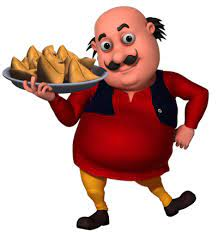

SOME OF MY FAV CARTOONS
~Beyblade burst
TOM
Tom is the scheming cat, and Jerry is the spunky mouse. The series was driven entirely by action and visual humour; the characters almost never spoke
JERRY
Jerry is a cute young brown mute anthropomorphic house mouse, who first appeared as a mouse named Jinx in the 1940 MGM animated short Puss Gets the Boot
MOTU
Motu always says his mind doesn't work on an empty stomach and thus whenever he eats samosas, his mind becomes super active
PATLU
Patlu in Furfuri Nagar and later Modern City, he is the main protagonist of the series who finds immense strength, physically and mentally, with the help of his favourite food, samosas.